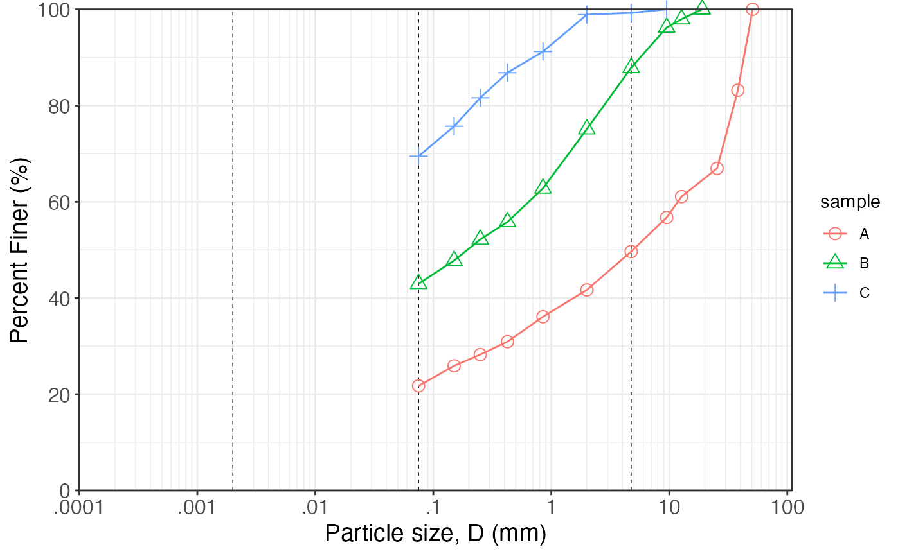

Create a template for particle size distribution graphs with logarithmic x-axis and standard vertical lines indicating common soil classification boundaries (clay/silt at 0.002 mm, silt/sand at 0.075 mm, sand/gravel at 4.75 mm). The graph is set up with appropriate axis labels and breaks for typical particle size ranges.
See also
Other soil mechanics:
Casagrande_LL(),
DS_plot(),
Mohr_Circle(),
bearing_capacity(),
compaction_test(),
fallcone_limits(),
induced_stress(),
insitu_stress()
Examples
suelo = dplyr::tribble(
~m , ~m.n , ~d , ~pp , ~sample ,
"2" , 2 , 50.8 , 100 , "A" ,
"1 1/2" , 1.5 , 38.1 , 83.19 , "A" ,
"1" , 1 , 25.4 , 66.95 , "A" ,
"1/2" , .5 , 12.7 , 61.08 , "A" ,
"3/8" , 0.375 , 9.5 , 56.75 , "A" ,
"4" , 4 , 4.75 , 49.67 , "A" ,
"10" , 10 , 2 , 41.69 , "A" ,
"20" , 20 , 0.85 , 36.11 , "A" ,
"40" , 40 , 0.425 , 30.92 , "A" ,
"60" , 60 , 0.25 , 28.25 , "A" ,
"100" , 100 , 0.15 , 25.91 , "A" ,
"200" , 200 , 0.075 , 21.74 , "A" ,
"3/4" , .75 , 19 , 100 , "B" ,
"1/2" , .5 , 12.7 , 97.97 , "B" ,
"3/8" , 0.375 , 9.5 , 96.25 , "B" ,
"4" , 4 , 4.75 , 87.86 , "B" ,
"10" , 10 , 2 , 75.11 , "B" ,
"20" , 20 , 0.85 , 62.8 , "B" ,
"40" , 40 , 0.425 , 55.82 , "B" ,
"60" , 60 , 0.25 , 52.18 , "B" ,
"100" , 100 , 0.15 , 47.79 , "B" ,
"200" , 200 , 0.075 , 42.96 , "B" ,
"3/8" , 0.375 , 9.5 , 100 , "C" ,
"4" , 4 , 4.75 , 99.27 , "C" ,
"10" , 10 , 2 , 98.91 , "C" ,
"20" , 20 , 0.85 , 91.23 , "C" ,
"40" , 40 , 0.425 , 86.83 , "C" ,
"60" , 60 , 0.25 , 81.62 , "C" ,
"100" , 100 , 0.15 , 75.70 , "C" ,
"200" , 200 , 0.075 , 69.48 , "C"
)
particle_size_graph() +
ggplot2::geom_point(
ggplot2::aes(.data$d, .data$pp,
shape = .data$sample,
color = .data$sample),
suelo, size = 3) +
ggplot2::geom_line(ggplot2::aes(.data$d, .data$pp,
color = .data$sample), suelo) +
ggplot2::scale_shape_manual(values = 1:3)
